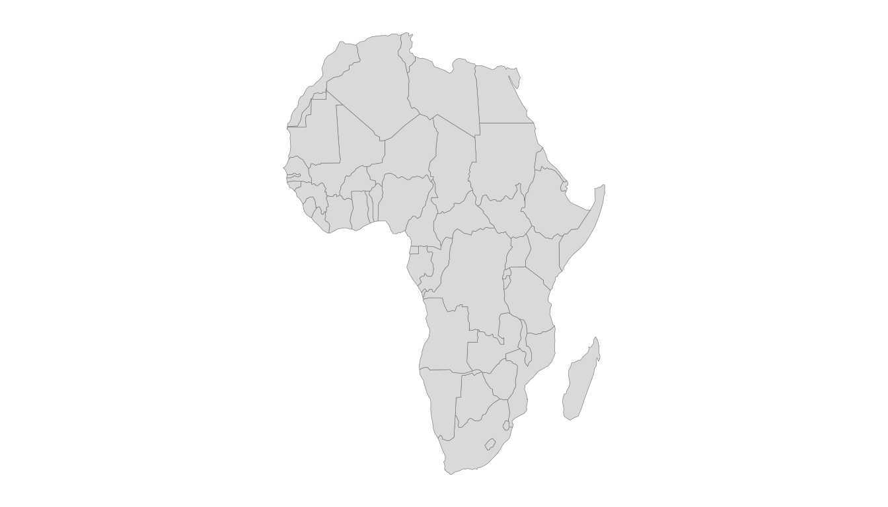

The legacy maps polygons are an unprojected plate
carrée: they badly distort area and split Russia, Fiji and New Zealand
across the antimeridian. The sf backend fixes all of this —
real projections, equal-area options, and an antimeridian-safe pipeline.
These features require the optional sf and
rnaturalearth packages.
install.packages(c("sf", "rnaturalearth", "rnaturalearthdata"))An equal-area, projected choropleth
world_data(2020, c(gdp = "NY.GDP.PCAP.KD"), geometry = "sf") |>
world_map(gdp, style = "quantile", projection = "equal_earth",
title = "GDP per capita (Equal Earth projection)")world_map() auto-detects the sf backend and
applies the projection through ggplot2::coord_sf().
Available projections include "equal_earth" (the default —
equal-area and good-looking), "robinson",
"mollweide", "natural_earth" and
"plate_carree".
Just the canvas
world_geometry() returns projected, region-subset,
antimeridian-safe geometry without any data — country polygons,
label-ready centroids, coastlines, a graticule or an ocean
rectangle:
africa <- world_geometry("countries", geometry = "sf", region = "Africa",
projection = "equal_earth")
ggplot(africa) +
geom_sf(fill = "grey85", colour = "grey40", linewidth = 0.1) +
theme_world_map()
Recentring and the antimeridian
A Pacific-centred world is one argument away; the sf
pipeline runs sf::st_break_antimeridian() before
projecting, so nothing streaks across the frame:
world_geometry("countries", geometry = "sf", recenter = 150)Region subsetting
region accepts a continent, a group name
("EU", "OECD", …), a vector of
iso3c codes, or a bounding box
c(xmin, ymin, xmax, ymax), and picks a sensible projection
for it.
Simplifying for the web
High-resolution geometry can be thinned for fast plotting with
simplify_geometry() (which uses rmapshaper
when available).
world_geometry(geometry = "sf", scale = "large") |>
simplify_geometry(keep = 0.1)